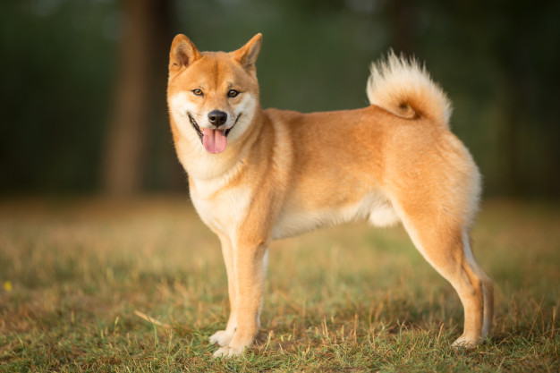
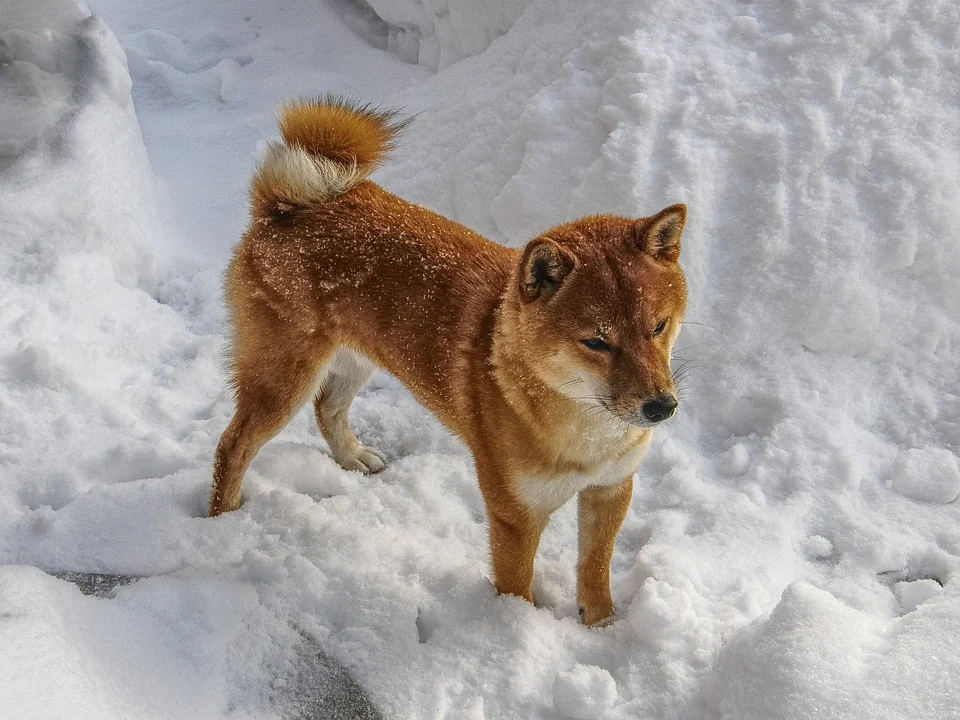
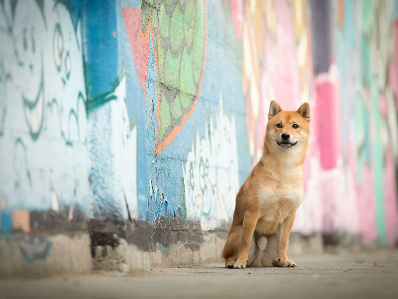
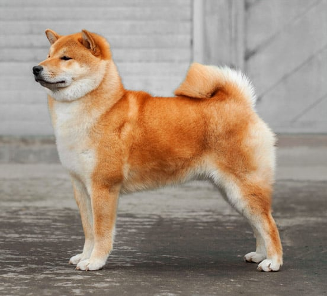

Hoewel Japen meerdere hondenrassen kent, zijn er zes rassen die echt hun oorsprong in het Land van de Rijzende Zon vinden. Dat zijn de Akita, de Shiba, de Kishu, de Hokkaido, de Kai en de Shikoku. De Shiba is daarvan waarschijnlijk de oudste. Hij is tevens de kleinste en het is heel goed mogelijk dat de Shiba daaraan zijn naam te danken heeft want ‘Shiba’ refereert aan een bescheiden formaat. De toevoeging ‘Inu’ die vaak gebruikt is, is gewoon Japans voor ‘hond’. De Shiba is van origine een jachthond die gebruikt werd om klein wild uit hun dekking te jagen en vogels op te stoten, zodat de jager er een schot aan kon wagen. Dat deden ze voornamelijk in dichte begroeiing en daarmee komt er nog een andere mogelijke verklaring voor de benaming Shiba om de hoek kijken. Want Shiba betekent ook kreupelhout en het vurige rood van zijn vacht had vrijwel dezelfde kleur als de herfstbladeren waarin hij zijn werkzaamheden verrichtte.



